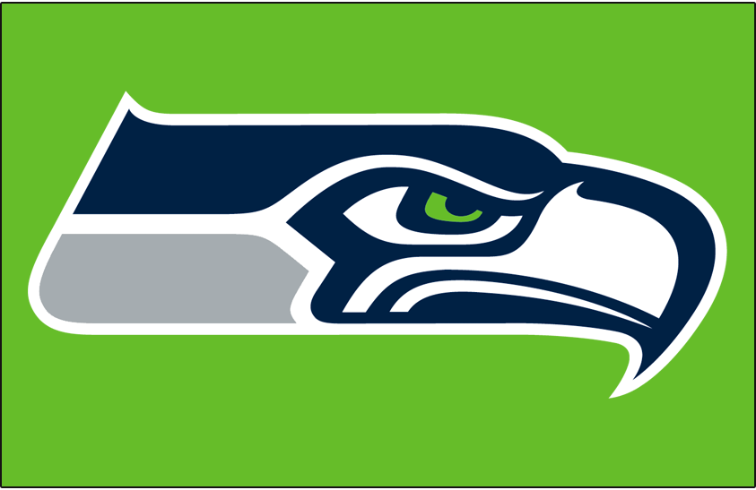

AJ Cononetz
Gonzaga University - Computer Science Student
My name is AJ Cononetz and I am a computer science student at Gonzaga University. My main passions are UI/UX, mobile app development, data science, mathematics, and task automation.
Use the headers above to jump to each section.
Core Skills
- GitHub and GitHub Actions
- SQL, Microsoft SQL Server, and Firebase
- C, C++, Python, Java
- Shell scripting
- Mobile App Development with Kotlin
Career Summary
| Date | Title | Organization/Class | Description |
|---|---|---|---|
| Sept 2025 – Present | Intern | Northwest Grocers | Automated SQL queries and reports, streamlined workflows with FTP and GitHub actions, created Excel macros and PowerShell/Python scripts, set up automated email notifications, and saved 500 hours of capacity per year. |
| June 2025 – Aug 2025 | IT/Project Work | Northwest Grocers | IT contact while also leading individual projects. Currently leading a project to build a system to generate link codes and consolidate item data from multiple distributor files (UNFI, URM, C&S, and KEHE) into a single file. |
| Aug 2024 – Dec 2024 | Interactive Map Project | Gonzaga Mobile App Development | Built a mobile app with a team using Kotlin and Firebase. Integrated databases with user input for real-time updates. Strengthened technical skills while gaining experience in UI/UX design and team collaboration. |
| Aug 2024 – Dec 2024 | Music Library | Gonzaga Database Management Systems | Designed a front end in Streamlit connected to SQL to build a searchable music library. Learned how to turn raw data into an interactive tool. |
Education and Qualifications
| Date | Institution | Degree/Program |
|---|---|---|
| 2021 – Present | Gonzaga University | B.S. Computer Science, Mathematics Minor, and Software Development Concentration |
| 2017 – 2021 | Bellevue Christian High School | High School Diploma |
| Date | Class | Details |
|---|---|---|
| Aug 2025 – Present | Web Development | HTML, CSS, JavaScript, jQuery, Node.js, React |
| Aug 2024 – Dec 2024 | Database Managment Systems | Python, SQL, PostgreSQLand Data Science |
| Jan 2023 – May 2023 | Computer Science 2 | C, C++, Git, and GitHub Basics |
Interests and Hobbies
- Sports

Click on the Seahawks logo to go to the team's website.
- Social video games
- Game design (DigiPen and iD Tech camps: 3D modeling, game design, robotics, art and animation, music and sound design)
- Reading
- Music
- Camp Counselor